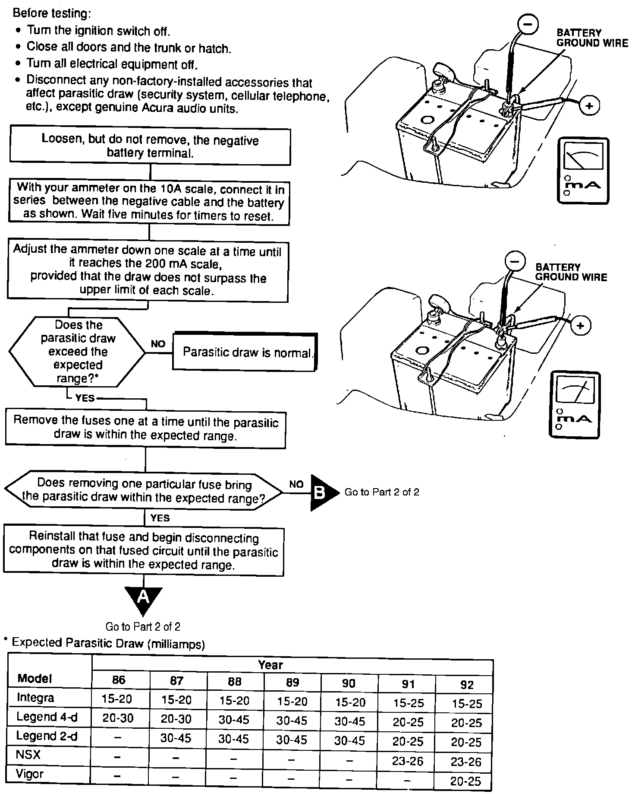

Operation CHARM
: Car repair manuals for everyone.
Home
>>
Acura
>>
1991
>>
NSX V6-3.0L DOHC
>>
Repair and Diagnosis
>>
Starting and Charging
>>
Technical Service Bulletins
>>
Charging System - Testing
>>
Diagnostic Charts
>>
Parasitic Draw Test
>>
Part 1 of 2
Part 1 of 2
